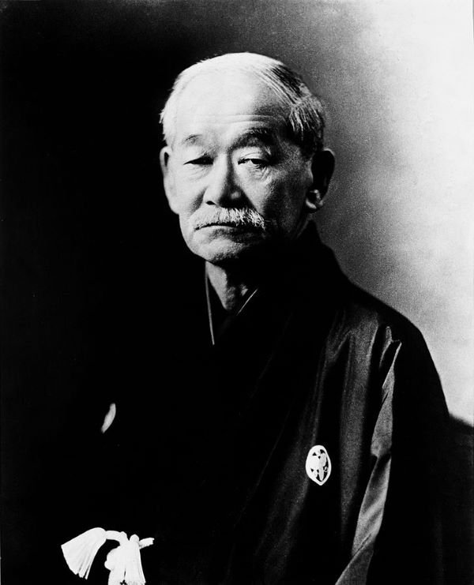
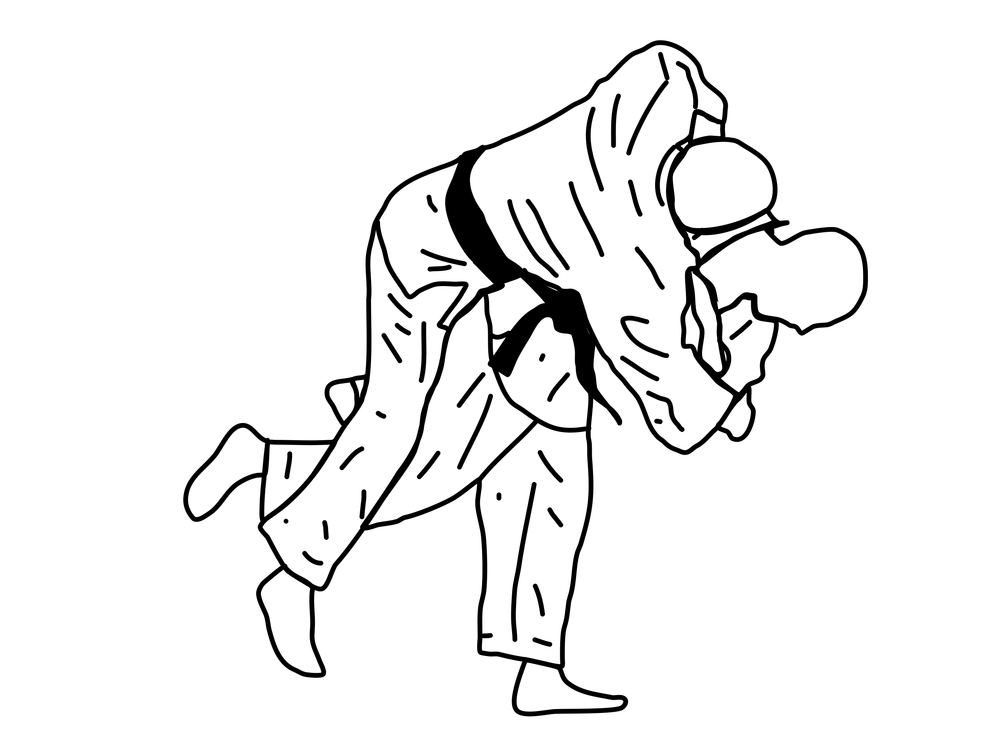

De uitvinder van het Judo is Jigoro Kano. Kano begon met jiu-jitsu toen hij klein was. Hij was alleen niet zo succesvol omdat hij als niet zo groot was.
Hij besloot om zijn eigen variant te maken waarmee hij alle grote mensen op de grond kon gooien. Hij maakte zijn eigen systeem, de zachte weg; Judo.

Weg en bij
Kano heeft een aantal dingen weggelaten uit het jiu-jitsu. Hij haalde alle gevaarlijke klemmen zoals klemmen op de nek, vingers en polsen weg.
Maar daar voor in de plaats voegde hij ook veel dingen toe. Alle worpen op 1 been stammen bijvoorbeeld niet uit het jiu-jitsu, hiermee begint
judo een sport te worden.

Judo als sport
Judo is een sport en Jiu-jitsu is een zelfverdedegingsysteem. Het grote verschil is dus dat wedstrijden kan doen met judo, iets wat (tot kort) niet kon met jiu-jitsu.
Het is nog ingewikkelijlder omdat jiu-jitsu een verzameling is van allerlij verschillende technieken van de samurai, judo is dat niet en daardoor is judo hetzelfde
terwijl er veel verschillende stijlen stijlen zijn van jiu-jitsu. In 1956 werd het eerste wk georganiseerd in Japan. Lang was (en tot zeker maat nog steeds) Japan
het enige land wat kans maakte op een titel. Het was een Nederlander die als eerste een Olympische titel "afpakte" van de Japanners. Anton Geesink was de eerste
niet-Japanse olympisch kampioen bij de zwaargewichten, iets wat hem tot een held bekroonde toen hij terug kwam van de spelen in 1964.